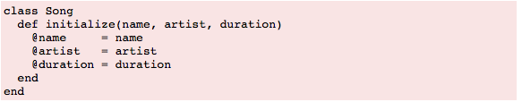

Ruby Classes
Technical Blog
Sunday, August 8, 2015
Definition and Purpose:
Let’s just dive right into classes in this blog, shall we? To start, classes are first-class objects and each is an instance of class Class. Creating an object of a type class and assigning it to a constant define a new class. When newly assigned class is called to create a new object, the new class method in class is run and calls the new object’s initialized method.
The main purpose of a class method is to send a message to the object of the class rather than to one of the class's instances. Some operations pertaining to a class can't be performed by individual instances of that class, like when using new. Messages cannot be sent to the class until an individual instance is created. The job of creating a new object generally belongs to the class. By creating a new object, there will be a method that can be accessed through the class object. A class object has its own methods, its own state, its own identity, and it doesn't share these things with instances of itself.
Definition and Purpose:
Objects are instances of the class. Objects are created in Ruby by using the method ‘new’ of the class.
aSong = Song.new
Here, ‘asong’ is the name of an object. The object name is followed by the equal to sign (=) followed by the class name. Then, the dot operator and the keyword new will follow.
Create Ruby Objects:
Parameters can be passed to the method new and they can be used to initialize class variables. When the new method is declared with parameters, the method initialize will be declared at the time of the class creation. The initialize method is a special type of method, which will be executed when the new method of the class is called with parameters.
Here is the example to create initialize method:

When ‘Song.new’ is called to create a new ‘Song’ object, Ruby creates an uninitialized object and then calls that object's initialize method, passing in any parameters that were passed to ‘new’. This gives a chance to set up the object's state.
Each object represents its own song, so each Song objects will need to carry around its own song name, artist, and duration. This means we need to store these values as instance variables within the object. In the example, the parameter name is assigned to the instance variable ‘@name’, artist is assigned to ‘@artist’, and duration is assigned to ‘@duration’.
Objects can be created by entering the following:
aSong = Song.new ("Bicylops", "Fleck", 260)